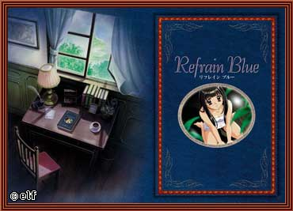

舞台是远离了都市的喧嚣、美丽而宁静的蜻蛉(かげろう)海岸。
主人公独自来到这片海滩时正在失意的底端，和一个女孩在此命运般的相会了。女孩的名字叫深景(みかげ)。
在夏日的海边一起共同度过的时光里，两人同时被对方所迷恋，坠入情网。但是，那段幸福并没有能够延续很长时间。
七年过去了，在巴士公司作为乘务员的主人公随母校东阳学园，再一次踏上了这片充满回忆的土地。为七年前的一幕幕再次闪现而苦恼，与背负着同样命运的学生们心意相通…随后、在这份抑郁思念的终点，主人公和其中的一个女孩子渐渐拉近了距离，两人的心灵和身体便相互重迭在了一起……
“思念”也好、“命运”也好……，将人和人的相会串接起来，用温情的笔触描绘出了这篇优秀的作品。
- Review - Roles - OVA -
翻译整理：Zzx、Neophoenix、AKI。特别感谢：MoonWalker
本站所引用的图片文字资料均符合elf公司的关于著作物引用的规定
但是elf已经没！有！了！本站Refrainblue的所有内容在标明作者及译者后均可以随意转载。
|